Caso 03 · Aplicación web · Sprint de diseño
Tu portafolio, sin complicarte.
Una plataforma para que quienes trabajan en diseño suban, ordenen y compartan su trabajo sin pelear con PDFs pesados ni webs a medida.
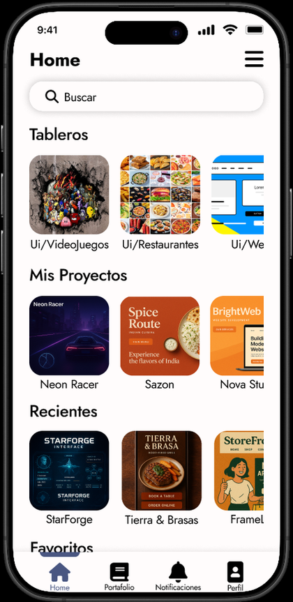
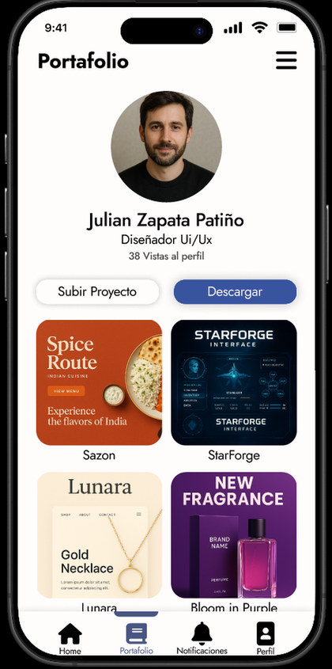
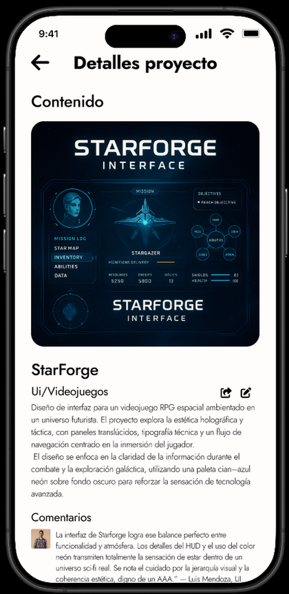
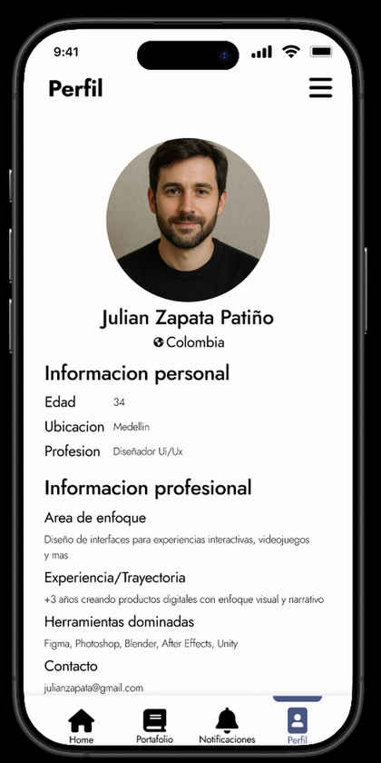
Mostrar un portafolio no debería ser otro proyecto aparte.
Quienes trabajan en diseño siempre tienen dificultades para enseñar su trabajo. Exportar un PDF, cargar archivos pesados o armar una página web propia exige muchos pasos y mucho tiempo, justo lo que no sobra.
El desafío
Diseñar en una sola semana una aplicación web donde cualquier persona pueda subir sus proyectos, tenerlos ordenados y compartirlos, descargarlos o mostrarlos de una forma más agradable y eficiente.
“Mostrar el trabajo cuesta más que hacerlo.”
Tres obstáculos se repiten: PDFs pesados difíciles de enviar y mantener, webs a medida que piden tiempo y conocimientos, y demasiados pasos entre exportar, subir, ordenar y compartir.
Tableros para ordenar, comunidad para crecer.
Una app pensada para publicar rápido y mostrar el trabajo de forma agradable.
- 01
Tableros de proyectos destacados
El inicio reúne Tableros, Mis proyectos, Recientes y Favoritos en carruseles, con un buscador arriba para llegar rápido a lo que se busca.
Destacar - 02
Tableros por categoría
Los proyectos se agrupan según su tipo, como UI/Videojuegos, UI/Restaurantes o UI/Web, y cada tablero guarda lo que le corresponde.
Ordenar - 03
Una red para ver y seguir
Cada persona publica su portafolio, explora el de los demás y los sigue, como en una red social del medio. El perfil muestra incluso cuántas vistas ha recibido.
Comunidad - 04
Compartir y descargar
Un proyecto o un tablero completo se comparte o se descarga en PDF cuando hace falta.
Exportar - 05
Editar y recibir feedback
El portafolio se edita dentro de la misma app, y quienes están en la plataforma pueden dejar comentarios para mejorarlo.
Mejorar
Todo parte del Home.
Antes de dibujar pantallas ordené la estructura de la app: qué vive en cada sección y cómo se llega a ella. Desde el Home salen cuatro áreas y un recorrido principal.
Cuatro áreas desde el Home
Portafolio, Notificaciones, Menú hamburguesa y Perfil, cada una con su propio contenido.
De tablero a proyecto
Del Home se entra a los Tableros y de ahí al Detalle del proyecto, donde se puede editar, compartir y leer los comentarios.
Lo que se ve en cada lugar
El Home reúne buscador, tableros, mis proyectos, recientes y favoritos. Las notificaciones muestran vistas al perfil, agregados a favoritos y comentarios. El menú guarda estadísticas, compartir y descargar el portafolio, ajustes y cerrar sesión.
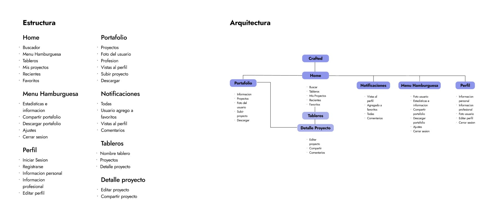
Subir un proyecto en un solo paso.
Subir y editar comparten la misma pantalla para que no haya nada nuevo que aprender.
Contenido a la vista
Cuatro espacios para sumar o arrastrar imágenes, y el nombre, la descripción y la categoría debajo.
Comentarios a elección
Un interruptor decide si el proyecto recibe feedback de quienes están en la plataforma.
Editar sin empezar de cero
Al editar, el proyecto aparece ya cargado con su contenido, para cambiar solo lo que haga falta.
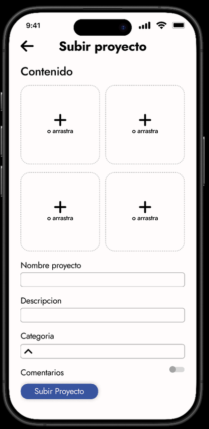
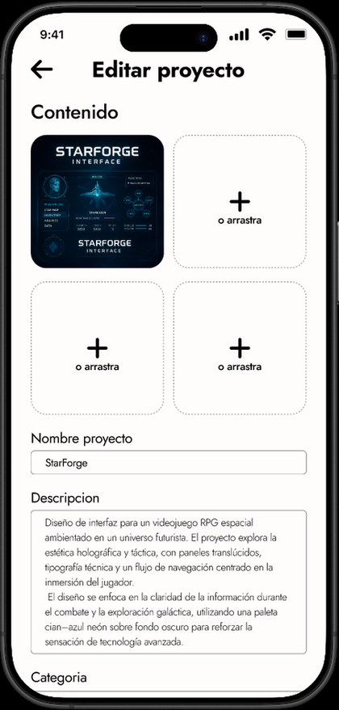
Pocos componentes, reutilizados en todas partes.
Armé una librería de componentes y una escala de espacios para que la interfaz se sienta consistente en cada pantalla.
Galerías
Cuatro variantes del mismo carrusel: tableros, mis proyectos, recientes y favoritos, más la galería del portafolio.
Controles
Barra de búsqueda, botón con interruptor y un desplegable de categorías.
Escala de espacios
De XS a XXL, desde 8 hasta 80 pt, para decidir qué tan cerca o lejos va cada elemento.
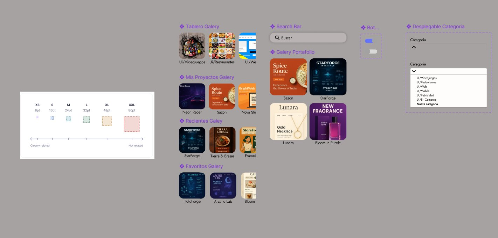
Categorías
Así se ve el resultado.
Para cerrar armé una serie de mockups que muestran la aplicación en uso: una forma simple y visual de organizar, explorar y mostrar proyectos de diseño. Desliza para recorrerlos.
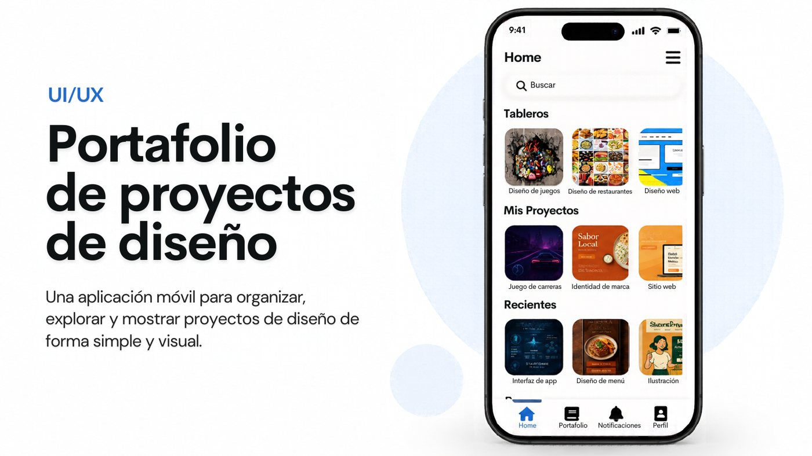
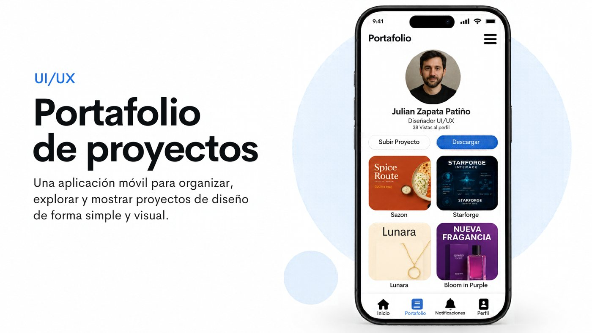
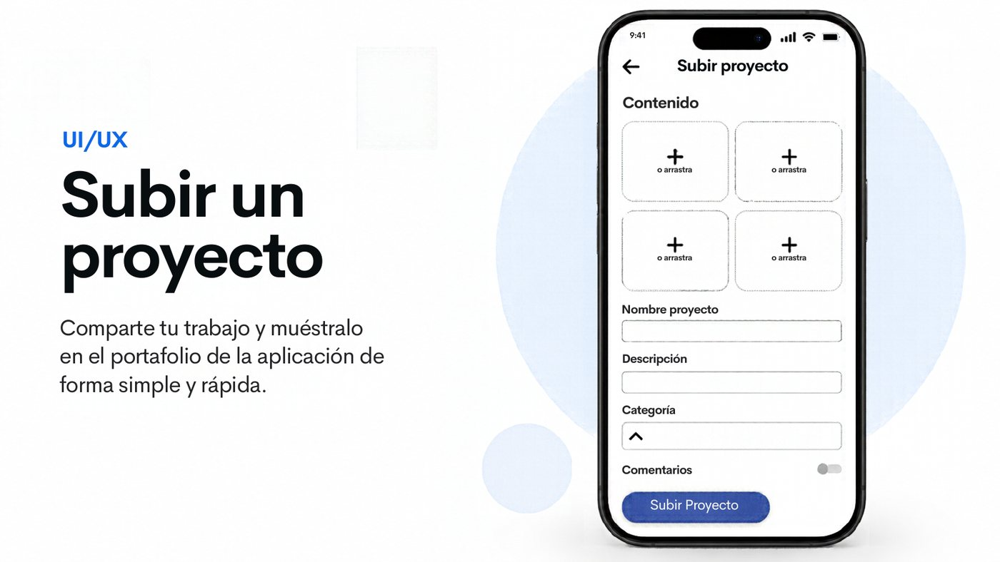
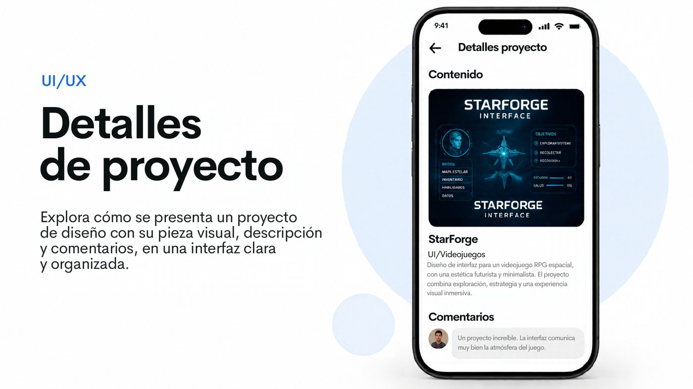
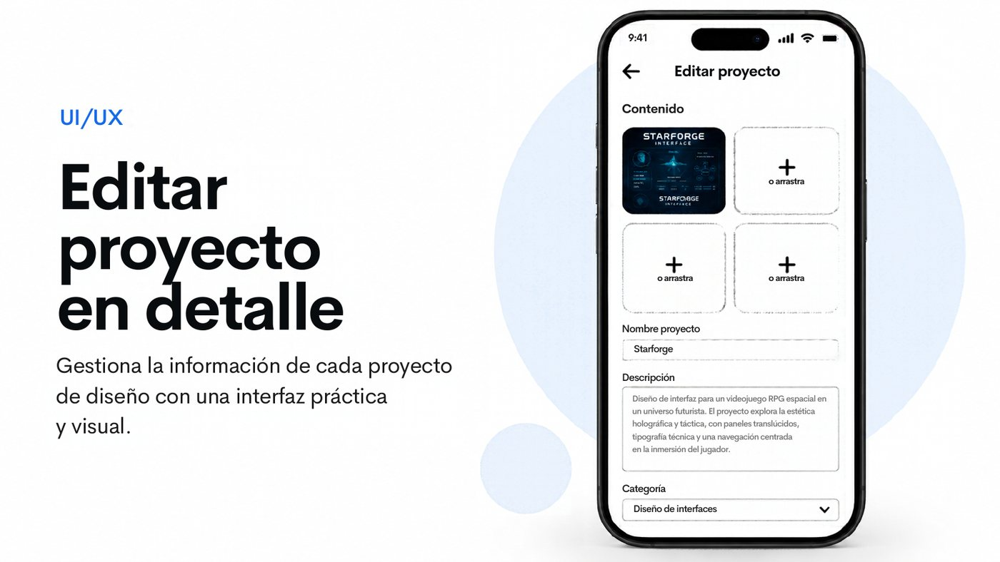
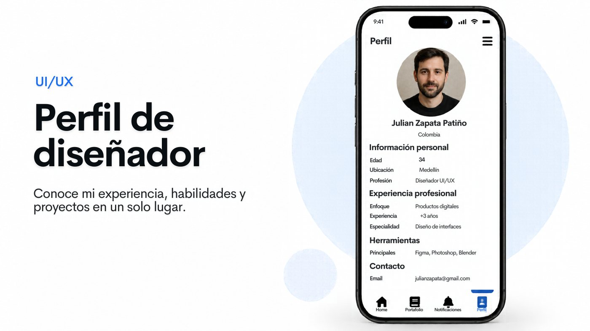
Una semana, toda la interfaz.
Un proyecto rápido y enfocado solo en UI: tomar la idea de la plataforma y convertirla en una aplicación clara, con una estructura fácil de recorrer.
Estructura
Definí cómo se organizan los tableros, las categorías y el espacio de comunidad para que todo se entienda a la primera.
Interfaz
Diseñé las pantallas de la aplicación pensando en que mostrar el trabajo fuera una experiencia agradable.
Flujos clave
Cuidé las acciones que más importan: subir, compartir, descargar en PDF, editar y recibir feedback.
¿Hablamos?
Si te interesa el proceso detrás de este proyecto, escríbeme y lo conversamos.
Escríbeme ↗